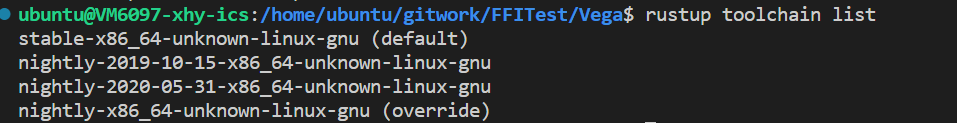
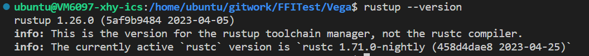

Introduction
vega is a distributed computing framework inspired by Apache Spark.
Getting started
Setting up Rust
Vega requires Rust Nightly channel because it depends on libraries that require Nightly (serde_traitobject -> metatype).
Ensure that you have and are using a Nightly toolchain when
building examples.
$ rustup toolchain install nightly
Then set the default, or pass the toolchain in when invoking Cargo:
$ rustup default nightly
Installing Vega
Right now, the framework lacks any sort of cluster manager of submit program/script.
In order to use the framework, you have to clone the repository and add the local dependency or add the upstream GitHub repository to your Rust project (the crate is not yet published on crates.io). E.g. add to your application Cargo.toml or:
[dependencies]
vega = { path = "/path/to/local/git/repo" }
# or
vega = { git = "https://github.com/rajasekarv/vega", branch = "master }
It is not recommended to use the application for any sort of production code yet as it's under heavy development.
Check examples and tests in the source code to get a basic idea of how the framework works.
Executing an application
In order to execute application code some preliminary setup is required. (So far only tested on Linux.)
- Install Cap'n Proto. Required for serialization/deserialziation and IPC between executors.
- If you want to execute examples, tests or contribute to development, clone the repository
git clone https://github.com/rajasekarv/vega/, if you want to use the library in your own application you can just add the depency as indicated in the installation paragraph. - You need to have hosts.conf in the format present inside config folder in the home directory of the user deploying executors in any of the machines.
- In
localmode this means in your current user home, e.g.:
$ cp vega/config_files/hosts.conf $HOME
- In
distributedmode the same file is required in each host that may be deploying executors (the ones indicated in thehosts.conffile) and the master. E.g.:
$ ssh remote_user@172.0.0.10 # this machine IP is in hosts.conf # create the same hosts.conf file in every machine: $ cd ~ && vim hosts.conf ... - In
- The environment variable
VEGA_LOCAL_IPmust be set for the user executing application code.- In
localit suffices to set up for the current user:
$ export VEGA_LOCAL_IP=0.0.0.0
- In
distributedthe variable is required, aditionally, to be set up for the users remotely connecting. Depending on the O.S. and ssh defaults this may require some additional configuration. E.g.:
$ ssh remote_user@172.0.0.10 $ sudo echo "VEGA_LOCAL_IP=172.0.0.10" >> .ssh/environment $ sudo echo "PermitUserEnvironment yes" >> /etc/ssh/sshd_config $ service ssh restart - In
Now you are ready to execute your application code; if you want to try the provided
examples just run them. In local:
cargo run --example make_rdd
In distributed:
export VEGA_DEPLOYMENT_MODE=distributed
cargo run --example make_rdd
Deploying with Docker
There is a docker image and docker-compose script in order to ease up trying testing and deploying distributed mode on your local host. In order to use them:
- Build the examples image under the repository
dockerdirectory:
bash docker/build_image.sh
- When done, you can deploy a testing cluster:
bash testing_cluster.sh
This will execute all the necessary steeps to to deploy a working network of containers where you can execute the tests. When finished you can attach a shell to the master and run the examples:
$ docker exec -it docker_vega_master_1 bash
$ ./make_rdd
Setting execution mode
In your application you can set the execution mode (local or distributed) in one of the following ways:
- Set it explicitly while creating the context, e.g.:
use vega::DeploymentMode;
let context = Context::with_mode(DeploymentMode::Local)?;
- Set the DEPLOYMENT_MODE environment variable (e.g.:
DEPLOYMENT_MODE=local).
Additional notes
- Depending on the source you intend to use you may have to write your own source reading rdd (like manually reading from S3) if it's not yet available.
- Ctrl-C and panic handling are not compeltely done yet, so if there is a problem during runtime, executors won't shut down automatically and you will have to manually kill the processes.
- One of the limitations of current implementation is that the input and return types of all closures and all input to make_rdd should be owned data.
Doc Description
|—— chapter_1.md
|—— chapter_2.md
|—— chapter_3.md
|—— chapter_4.md
|—— chapter_5.md
└x─ SUMMARY.md
- chapter_1 is the first chapter of the user guide, which introduces the basic concepts of Vega .
- chapter_2 is the second chapter of the user guide, which introduces the way to run vega in the local mode .
- chapter_3 is the third chapter of the user guide, which introduces the way to run vega in the distributed mode .
- chapter_4 is the fourth chapter of the user guide, which introduces the way to run vega with hdfs .
- chapter_4 is the fifth chapter of the user guide, which introduces the way to run monitoring for vega .
单机部署指南
以下为单机部署vega的指南：
-
推荐使用linux系统运行（windows系统在部分环节可能略有不同，需要自己摸索）
-
关于rust的版本，请选择 rust nightly ，具体版本请参考这里：   推荐rustup default stable（日常开发用稳定版），在vega目录下
rustup override set nightly重载为nightly格式。 -
如果出现
error: failed to run custom build command foropenssl-sys v*`类似的错误，请按照提示下载openssl即可：
# On Ubuntu
sudo apt-get install libssl-dev
# On Arch Linux
sudo pacman -S openssl
# On Fedora
sudo dnf install openssl-devel
如果不能解决，可以参考错误提示，可能需要安装pkg-config：sudo apt-get install pkg-config。
-
注意，Rust运行需要完整的编译环境，安装 GCC 或 Clang，Ubuntu 系统下可以通过安装 build-essential 包完成。如果出现
error: failed to run custom build command forccl-sys v*`类似的错误，请检查是否安装了 GCC 或 Clang 。 -
在家目录下(
echo $HOME)，创建hosts.conf文件，内容格式同config，参考的内容为：
master = "<host_ip>:8080"
# 请将<host_ip>替换成本机ip地址
# 单机运行模式下不要需要配置slave节点
# 非hdfs模式下不需要配置namenode参数
- cargo run --release时报错，建议参考[https://github.com/alecmocatta/serde_traitobject/issues/35] 运行命令行命令
rustup install nightly-2023-04-17
rustup default nightly-2023-04-17
rustup component add rust-src --toolchain nightly-2023-04-17
rustup override set nightly-2023-04-17-x86_64-unknown-linux-gnu
- 需要安装capnpc：
curl -O https://capnproto.org/capnproto-c++-0.7.0.tar.gz
tar zxf capnproto-c++-0.7.0.tar.gz
cd capnproto-c++-0.7.0
条件编译使用
在Cargo.toml
[features]
default=["hdrs_valid"]
hdrs_valid=[]
# aws_connectors = ["rusoto_core", "rusoto_s3"]
在default前加'#'表示注释，使得条件编译生效，忽略hdrs的编译. 去除'#'表示有hdrs_valid可用，条件编译会使得hdrs相关的模块正常编译.
多机部署指南
vlab多机内网互联
环境
vlab平台上提供的linux虚拟机。 示例中使用两台机器：VM6097与VM6854。内网ip地址分别为：172.31.240.88与172.31.138.136。
hosts.conf文件
在各台主机上均需要有一致的hosts.conf文件，且均放置于家目录下。 文件格式如下：
master = "master的ip : 任意的可用端口"
[[slaves]]
ip = "期望登录的slave1的账户 @ slave1 的ip"
(key = "slave1 对应的ssh私钥")
[[slaves]]
ip = "期望登录的slave2的账户 @ slave2 的ip"
(key = "slave2 对应的ssh私钥")
# ......
# 非hdfs模式下不需要配置namenode参数与各节点的java_home,hadoop_home
注意：master处不能填写"127.0.0.0"等自机ip，需要填写slave能够连接到的master的内网ip。 ssh私钥可以不进行设置，此时会默认使用"~/.ssh/id_rsa"为私钥。 在我们的例子中，VM6097作为master，VM6854作为slave。hosts.conf文件如hosts.conf所示。
ssh设置
在master下运行命令ssh-keygen（注意：询问“Enter file in which to save the key”时，输入期望的地址及合适的密钥名）将该密钥对中的私钥的地址同步到hosts.conf文件中。将公钥复值到期望连接的slave的目录"~/.ssh/"下，并将公钥中的内容复制添加到文件"~/.ssh/authorized_keys"中（如果没有该文件，则新建文件）。
下面进行权限的设置：
在master的"~/.ssh/"目录下运行命令：
> chmod 600 私钥名
//（示例中为chmod 600 brc_rsa）
> chmod 700 ~/.ssh
在slave的"~/.shh/"目录下运行命令：
> chmod 600 authorized_keys
> chmod 700 ~/.ssh
至此ssh已经配置成功，可以通过命令"ssh -i 密钥地址 目标ip"来测试ssh是否正常工作。
注意：每个密钥对只能用于一个slave，即对每个slave都需要进行上面的整个配置流程。
TCP测试（一般情况下可跳过）
两台机器可以通过以下方式测试TCP连接是否正常： slave上运行：
> nc -l 端口
//（如10000，要求端口可用，即大于1024并且未被占用）
正常情况下，slave会进入监听对应端口的状态中。 接着，master上运行：
> nc slave的ip地址 对应的端口
正常情况下，进入可发送信息的状态。如果发送的信息可以在slave上收到并显示，则没有问题。
如果出现了问题，则需要检查两台机器的TCP连接设置等。下面为可供参考的设置为防火墙设置： 在slave下执行
> iptables -A INPUT -s master的ip -j ACCEPT
> iptables -L -n
//以上指令可能需要添加sudo给予权限
参考的输出为：

TimeOut设置（一般情况下可跳过）
可以在代码文件TimeOutConfig中，搜索"executor @{} not initialized"，或在大约440行处，通过配置代码tokio::time::delay_for(Duration::from_millis(TimeOut)).await;中的TimeOut参数（单位为ms），来控制组网时对网络延迟的容忍度。当某slave超过5次在TimeOut ms内没有传回消息，master即认为该slave已下线。
这里处于测试目的与网络状况，选择了200ms。请根据性能需求、网络情况与容忍程度合理配置该参数，参数过低可能会导致运行出现故障。
运行
slaves保持开机状态，在master中，设置环境变量DEPLOYMENT_MODE后运行程序。示例的命令如下：
//在工作目录下
> export VEGA_DEPLOYMENT_MODE=distributed
> cargo run
即可在分布式模式下运行，对于我们的例子（以make_rdd.rs为测试文件），结果如下：

HDFS适配指南
HDFS的安装与环境配置
下载Hadoop
前往Hadoop官网下载Hadoop。 也可在Release页面选择合适的版本下载。本项目编写时使用的版本为3.3.5。 建议下载预编译版(即较大的.tar.gz文件)，以下的所有内容均从已编译好的Hadoop开始。若要从源代码开始编译Hadoop，请自行查找其他教程。 主机和从机上都要安装Hadoop。可以考虑主机下载好且配置好免密登录后，用scp命令分发。
配置免密登录
将所有节点的公钥加入每台机器的.ssh/authorized_keys文件末尾即可。
上述操作会使得任意两台主机间（包括到自己）都可以免密登录。但理论上免密登录是用于Hdfs的启动和关闭脚本，因此只配置主机和从机之间的免密登录应该也可用。用户可自行尝试。
安装Java
Hadoop需要的Java版本为JDK1.8，我们开发时测试能用的版本为JDK1.8.0_371。可自行从Java官网下载对应版本安装包安装。
配置环境变量
编辑/etc/profile或~/bashrc。
首先在末尾加入JAVA_HOME和HADOOP_HOME，内容分别为JAVA和HADOOP的安装路径。
然后加入
export PATH=$JAVA_HOME/bin:$HADOOP_HOME/bin:$HADOOP_HOME/sbin:$PATH
export CLASSPATH=${HADOOP_HOME}/etc/hadoop:`find ${HADOOP_HOME}/share/hadoop/ | awk '{path=path":"$0}END{print path}'`
export LD_LIBRARY_PATH="${HADOOP_HOME}/lib/native":$LD_LIBRARY_PATH
export PDSH_RCMD_TYPE=ssh
这样的配置每个节点都要做。
配置Hadoop
首先，在Hadoop目录中的etc/hadoop/hadoop-env.sh文件中加入export JAVA_HOME=[Java路径]，与配置环境变量时结构相同。
然后修改etc/hadoop/workers，将所有worker节点的IP加入其中，每个节点一行。
之后还需修改etc/hadoop/下的core-site.xml和hdfs-site.xml文件，指定NameNode地址等参数。具体内容可以参考其他教程。
最后将
HDFS_DATANODE_USER=aaa
HDFS_DATANODE_SECURE_USER=bbb
HDFS_NAMENODE_USER=ccc
HDFS_SECONDARYNAMENODE_USER=ddd
这几个参数加入sbin/目录中的start-dfs.sh，stop-dfs.sh文件顶端，这几个参数的意义即字面意义。aaa、bbb等字段需替换成启动时用来ssh登录的用户（即配置了免密登录的用户）。
上面的这些配置，每一个节点上的Hadoop都需配置。如果节点结构相同，可以先配好一个节点的内容再用scp命令分发。
最后在主节点的控制台输入并运行指令hdfs namenode -format，格式化NameNode。
运行测试
上面的配置都完成后，在HDFS的主节点终端上输入start-dfs.sh即可启动HDFS。输入stop-dfs.sh即可关闭HDFS。可以用hdfs dfs -ls，hdfs dfs -put，hdfs dfs -get等终端命令操作HDFS。还可通过浏览器访问master:9870/页面查看HDFS的运行情况。其中master应替换为HDFS主节点的IP地址。
配置文件的设置
如果需要使用HDFS，请在hosts.conf文件中配置namenode参数，并为每个slave节点设置对应的java_home与hadoop_home参数。 其中，namenode代指hdfs的主节点ip(不需要添加端口)，java_home代指java的安装路径，hadoop_home代指hadoop的安装路径。 参考文件如hosts.conf所示。
相关类的使用
HdfsIO
与HDFS之间的交互通过HdfsIO类完成。
要使用这个类提供的各种功能，需要首先调用new()方法生成对象。该类提供了以下几个实例方法：
read_to_vec
#![allow(unused)] fn main() { pub fn read_to_vec(&mut self, path: &str) -> Result<Vec<u8>> }
该方法读取路径path对应的文件。若读取失败则返回对应的Err，否则返回Ok，内容为读取得到的字节向量。
该方法用来处理需要直接使用文件内容的一些特殊情况，如要将文件内容放入Rdd进行计算，建议尽可能使用read_to_rdd或read_to_rdd_and_decode
read_to_rdd
#![allow(unused)] fn main() { pub fn read_to_rdd( &mut self, path: &str, context: &Arc<Context>, num_slices: usize, ) -> HdfsReadRdd }
该方法返回路径为path，分区数为num_slices的HdfsReadRdd。
对HdfsReadRdd的介绍，详见HdfsReadRdd
read_to_rdd_and_decode
#![allow(unused)] fn main() { pub fn read_to_rdd_and_decode<U, F>( &mut self, path: &str, context: &Arc<Context>, num_slices: usize, decoder: F, ) -> SerArc<dyn Rdd<Item = U>> where F: SerFunc(Vec<u8>) -> U, U: Data, }
该方法返回的实际为一个MapperRdd，map操作中的函数为一个对字节向量进行解码的函数decoder。Decoders类中预置了一些常用的decoder，详见对Decoders类的介绍。
write_to_hdfs
#![allow(unused)] fn main() { pub fn write_to_hdfs (&mut self, data: &[u8], path: &str, create: bool) -> Result<()> }
将&[u8]类型数据写入hdfs的指定路径中。返回的结果用来表示写入是否成功。
注意：该方法不会递归地创建需要的目录，也不会覆写已存在的同名文件。
HdfsReadRdd
该Rdd仅由read_to_rdd方法返回，不能直接new。
文件读取到Rdd的功能主要依靠HdfsReadRdd来实现。该Rdd在创建时接收路径和namenode等信息，随后会自动判断路径是文件还是文件夹，并按照指定的分区数对所有文件进行分区（若分区数大于文件总数，则令分区数等于文件数）。
该Rdd对应的Item类型为Vec<u8>，即字节向量。即每个分区可以看作是内容为字节向量的迭代器。因此map等操作应对字节向量进行。
另外，创建Rdd时仅会读取元数据进行分区操作。实际文件内容的读取在计算阶段进行。
Decoders
内置2个类方法，各返回一个用于解码的函数。
to_utf8()
#![allow(unused)] fn main() { pub fn to_utf8() -> impl SerFunc(Vec<u8>) -> String }
将字节向量按utf8编码解码为String。即每个文件对应一整个String。
to_utf8_lines()
#![allow(unused)] fn main() { pub fn to_utf8_lines() -> impl SerFunc(Vec<u8>) -> Vec<String> }
将字节向量按utf8编码解码，并按行分割为字符串，每个文件对应一个内容为字符串的向量。
加入性能监控的方式
当前的默认写法为在Windows平台下Docker中部署时的情况，若在别的平台可能需要不同的配置，读者可以自行查找。
配置Prometheus
若需要监测远程的节点，在docker/monitoring/prometheus.yml中修改job_name: 'node'下的targets值，使用ip:port模式，应能指向对应节点上的node_exporter的端口。同样，job_name: 'vega'下的targets值应指向vega的主节点上的8000端口(vega默认性能输出端口)。
Docker
直接在docker/文件夹下使用命令
docker compose up -d
后在http://localhost:3000 打开grafana页面，使用用户名admin密码admin登录，即可在dashboards下查看到对应的监控面板。
远程手动
在远程服务器上执行以下命令
cd ~
wget https://github.com/prometheus/node_exporter/releases/download/v1.6.0/node_exporter-1.6.0.linux-amd64.tar.gz
tar -xzvf node_exporter-1.6.0.linux-amd64.tar.gz
cd node_exporter-1.6.0.linux-amd64
./node_exporter &
在本地下载prometheus和grafana或直接使用docker
下载命令如下
cd ~
wget https://dl.grafana.com/enterprise/release/grafana-enterprise-9.5.2.linux-amd64.tar.gz
tar -xzvf grafana-enterprise-9.5.2.linux-amd64.tar.gz
wget https://github.com/prometheus/prometheus/releases/download/v2.45.0/prometheus-2.45.0.linux-amd64.tar.gz
tar -xzvf prometheus-2.45.0.linux-amd64.tar.gz